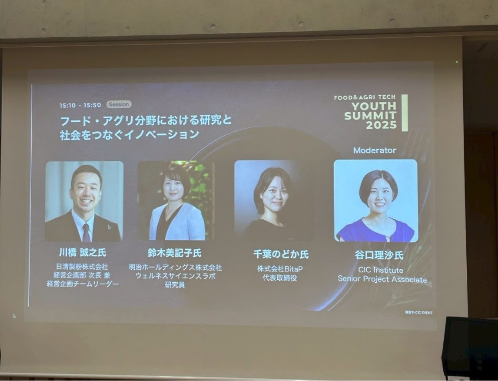
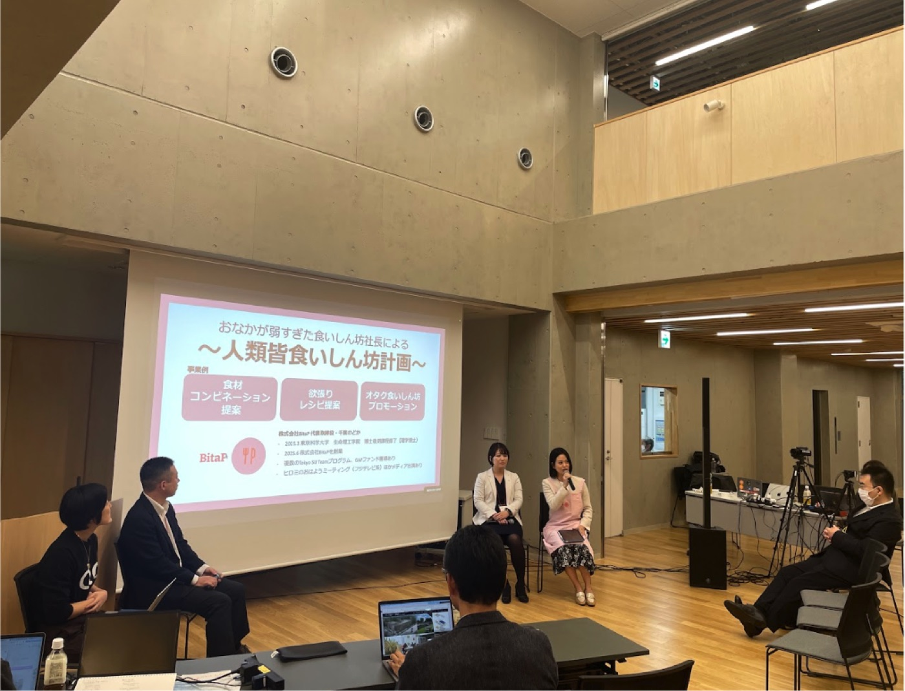
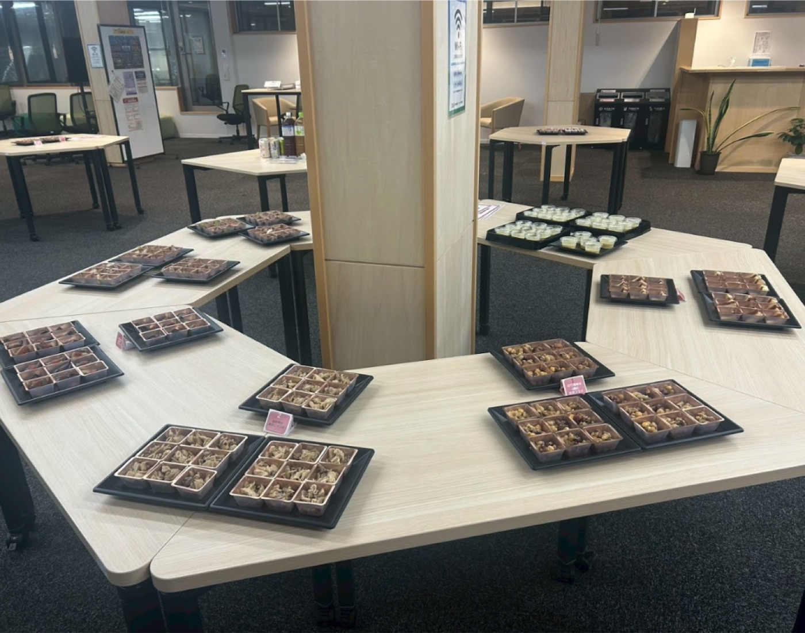
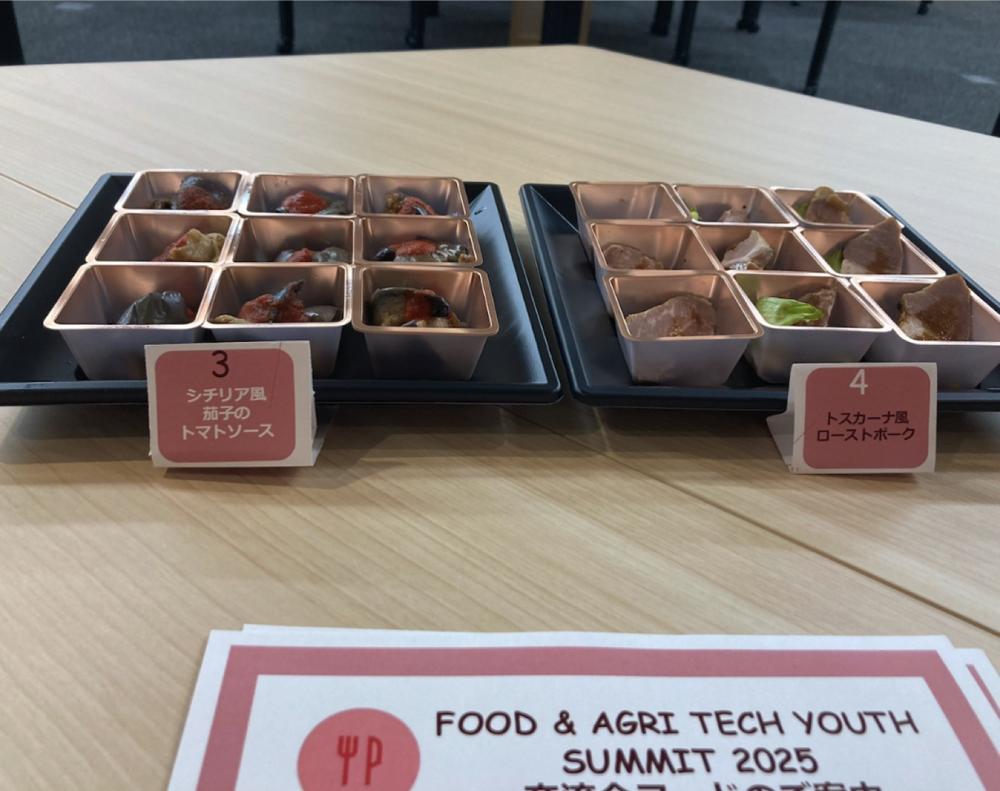

2025/10/26
【登壇情報】【事業事例】フードテックイベントに登壇＆懇親会フードを提供しました
2025年10月26日、株式会社BitaPは、一般社団法人TOKYO FOOD INSTITUTE・CIC Institute・東京農工大学が主催する「FOOD&AGRI TECH Youth Summit 2025」において、懇親会のフード提供の企画を担当いたしました。
当日は、フードテックやライフサイエンス領域の研究者・企業関係者を中心に約70名が参加しました。BitaPは、和食 × 腸内環境 × おいしさをテーマに、健康への配慮をさりげなく取り入れたメニュー企画・ケータリング手配・ポップ制作・当日運営サポートを一貫して行いました。また、この日はJAPAN FOOD INNOVATION WEEK4日目ということもあり「おいしいのに胃腸にやさしい」内容になるよう食材選定を工夫いたしました。
今後もBitaPは、「科学と食をつなぐ」イベントや学会・交流会の場を、フードの力で豊かにする企画支援を展開してまいります。
【イベント主催・ご担当者様からのコメント】
・「メニューがテーマに合わせてしっかり考えていただいていて、大変美味しくいただくことができました。」
・「イベントの趣旨にあったお料理をご用意いただいただけでなく、何がどうお腹に優しいのかご説明用のわかりやすいチラシをご用意いただいたので、こだわりポイントがわかることで心も満たしていただきました。」



